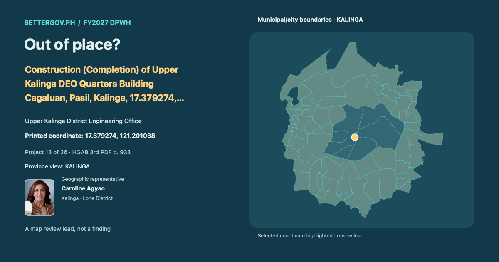

Caroline AgyaoKalinga · Lone DistrictOfficial profile ↗
Out of place? · Construction (Completion) of Upper Kalinga DEO Quarters Building Cagaluan, Pasil, Kalinga, 17.379274, 121.201038

Geographic representative
Upper Kalinga District Engineering Office · Geographic representative: Caroline Agyao · Kalinga · Lone District. Printed coordinate 17.379274, 121.201038. Geographic coverage is not sponsorship. Proposed allocation. Coordinate signals are review leads, not findings.